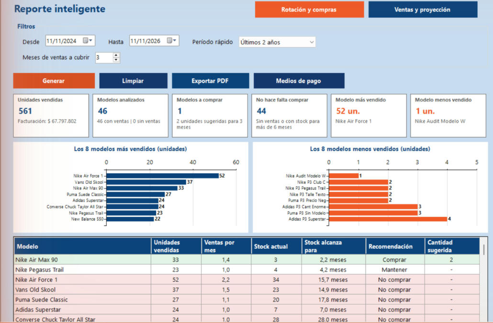
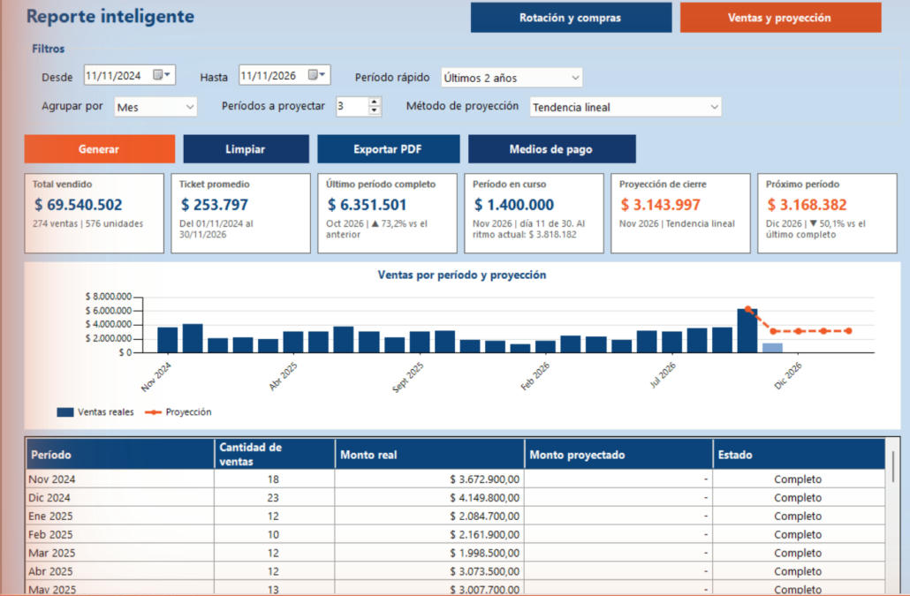
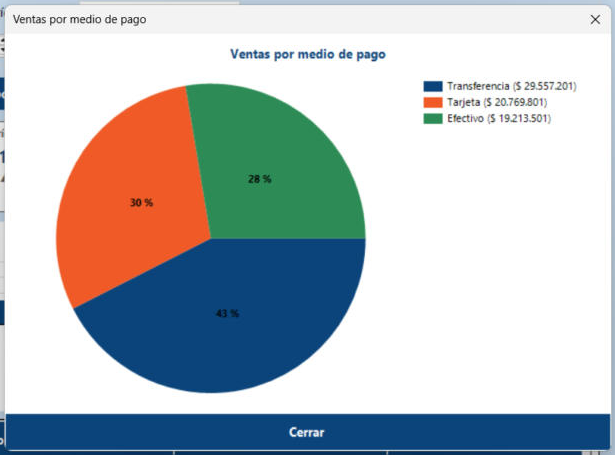

Inicio › Reporte › Reporte inteligente
Reporte inteligente
Tiene dos vistas. Rotación y compras te dice qué modelos se venden más y menos y cuáles conviene comprar. Ventas y proyección muestra cuánto se vendió por período y estima los próximos. Las dos se pueden exportar a un solo PDF.
Dónde está: Reporte › Reporte inteligenteLo usa: AdministradorAtajo: F1
Pasá el mouse por encima de cualquier botón o campo de la pantalla para ver qué hace.

Qué hace cada elemento
- 1Rotación y comprasVista para decidir compras: ranking de modelos y recomendación de cuánto reponer.
- 2Ventas y proyecciónVista para ver cómo evolucionan las ventas y una estimación de los próximos períodos.
- 3DesdePrimer día del período a analizar.
- 4HastaÚltimo día del período a analizar.
- 5Período rápidoAtajo para completar las fechas: últimos 6 meses, 1, 2, 3 o 4 años. "Personalizado" te deja elegir las fechas a mano.
- 6Meses de ventas a cubrirCuántos meses de ventas querés tener en stock después de comprar. Va de 1 a 12. Con eso el sistema calcula la recomendación.
- 7GenerarArma el reporte con los filtros elegidos.
- 8LimpiarDeja los filtros como al principio y vacía el reporte.
- 9Exportar PDFGuarda en un PDF las dos vistas juntas: la de rotación y la de ventas. Primero hay que generar el reporte.
- 10Medios de pagoAbre un gráfico con cuánto se vendió en efectivo, tarjeta y transferencia.
- 11Tarjetas de resumenSeis datos clave: unidades vendidas y facturación, modelos analizados, modelos a comprar, modelos que no hace falta comprar, el más vendido y el menos vendido.
- 12Los más vendidosLos 8 modelos que más unidades vendieron en el período.
- 13Los menos vendidosLos 8 modelos que menos unidades vendieron. Son los candidatos a no reponer.
- 14Tabla de recomendacionesUna fila por modelo: unidades vendidas, ventas por mes, stock actual, para cuántos meses alcanza el stock, la recomendación y la cantidad sugerida a comprar.
- 15CerrarCierra el reporte y vuelve al menú principal.
Otras vistas de esta pantalla


Cómo hacerlo
- Entrá en la vista Rotación y compras.
- Elegí un Período rápido o las fechas Desde y Hasta.
- En Meses de ventas a cubrir poné cuántos meses de stock querés tener (por defecto, 3).
- Tocá Generar.
- Mirá la tabla: los modelos con recomendación Comprar traen la cantidad sugerida.
Tené en cuenta: La recomendación se basa en lo que se vendió en el período elegido. Cuanto más largo sea, más confiable es.
- Entrá en la vista Ventas y proyección.
- Elegí las fechas, cómo Agrupar por (mes o semana) y cuántos períodos proyectar.
- Elegí el método de proyección.
- Tocá Generar y mirá el gráfico y la tabla.
Tené en cuenta: La proyección usa solo períodos completos. El período en curso no entra en el cálculo y necesita al menos 3 períodos completos.
- Generá el reporte.
- Tocá Medios de pago.
- Cerrá la ventana con Cerrar cuando termines.
- Generá el reporte.
- Tocá Exportar PDF y elegí dónde guardarlo.
Tené en cuenta: El PDF incluye las dos vistas: 1. Rotación de productos y compra sugerida, y 2. Ventas por período y proyección.
Para saber más
Mensajes que puede mostrar el sistema 10
| Mensaje | Qué significa y qué hacer |
|---|---|
| ErrorLa fecha 'Desde' no puede ser posterior a la fecha 'Hasta'. | Corregí las fechas para que el período tenga sentido. |
| ErrorLos meses de ventas a cubrir deben estar entre 1 y 12. | Poné un número dentro de ese rango. |
| ErrorLa cantidad de períodos a proyectar debe estar entre 1 y 6. | Poné un número dentro de ese rango. |
| AvisoNo hay ventas en el rango elegido. | Ampliá el período. |
| AvisoDatos insuficientes para proyectar: hacen falta al menos 3 períodos completos. | Ampliá el rango de fechas o agrupá por semana. |
| AvisoPrimero generá el reporte con al menos una venta para poder exportarlo. | Tocá Generar antes de exportar. |
| AvisoPrimero generá el reporte con al menos una venta para ver los medios de pago. | Tocá Generar antes de abrir Medios de pago. |
| ListoPDF exportado correctamente: (ruta) | El archivo quedó guardado. |
| ErrorError al exportar PDF: (motivo) | Cerrá el archivo si estaba abierto o elegí otra carpeta. |
| ErrorNo se pudo generar el reporte. El error quedó registrado en la bitácora. | Avisale al administrador. |
Reglas a tener en cuenta 7
- Solo el Administrador puede ver este reporte.
- Comprar: el stock actual no alcanza para los meses de ventas que pediste cubrir, al ritmo del período. La cantidad sugerida es lo que falta para llegar.
- No comprar: no hubo ventas en el período, o el stock ya alcanza para más del doble de los meses a cubrir.
- Mantener: ni una cosa ni la otra. Por ahora no hace falta comprar.
- En la proyección, la tendencia lineal sigue la dirección de los períodos completos. El promedio móvil usa el promedio de los últimos 3.
- Si el rango no termina en un período entero, el sistema lo ajusta a períodos enteros y te muestra el rango real debajo de los filtros.
- El reporte es de consulta: no modifica ningún dato.
Temas relacionados
SneakRush · Ayuda del sistema · Reporte inteligente. Podés abrir esta ayuda desde cualquier pantalla con la tecla F1.